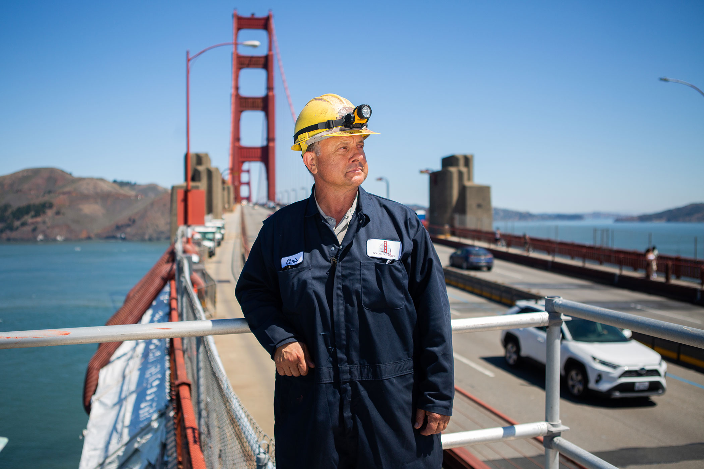
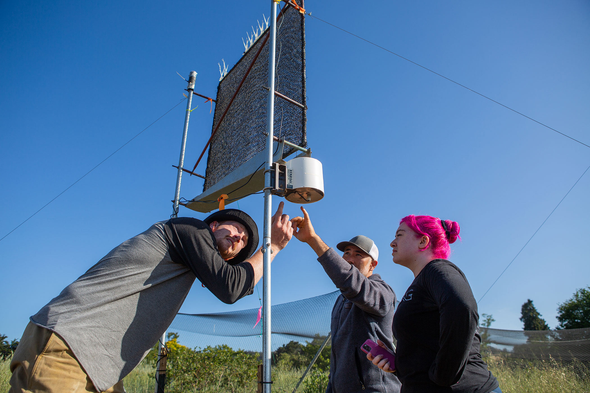
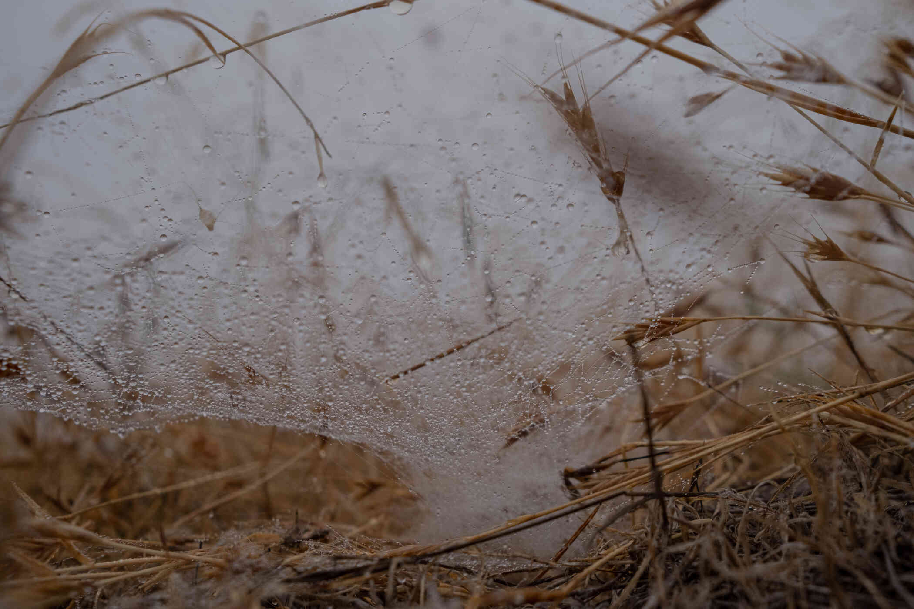
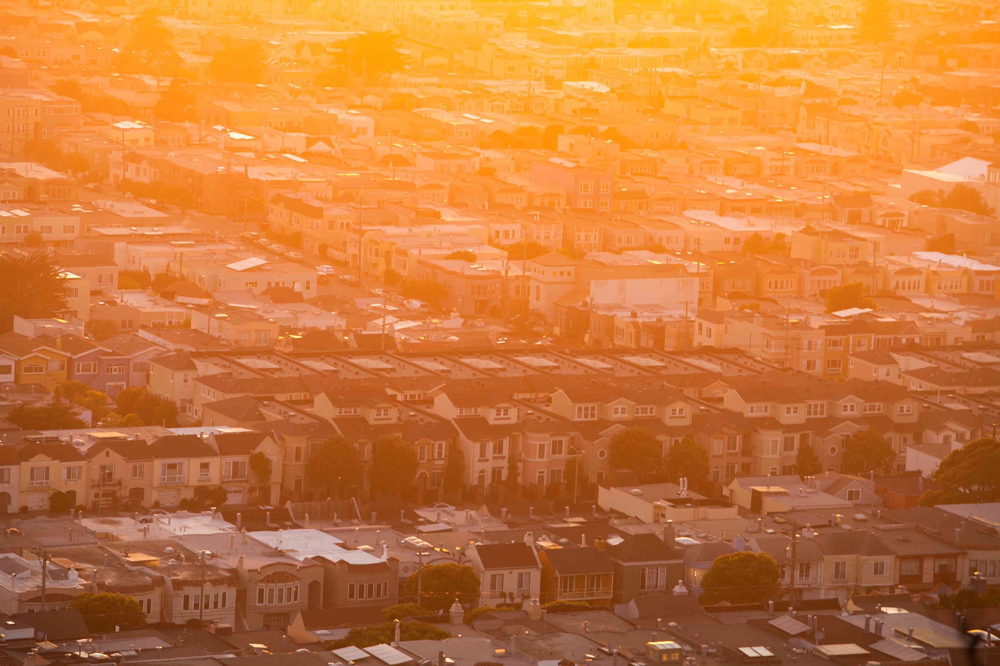

SAN FRANCISCO — It was the first morning of summer, the start of fog season. But the sky above the Golden Gate Bridge remained clear and blue.
Chris Dzierman, a bridge painter and foreman, looked to the west. Near the horizon, where water usually meets sky, a thick fog bank lurked. He wondered if and when it would roll in, as fog usually does on summer afternoons, smothering the bridge and beyond in wind and whiteness.
“It could last three minutes or three hours,” Mr. Dzierman said. “It’s fog. It’s got a mind of its own.”
Every summer, fog breathes life into the Bay Area. But people who pay attention to its finer points, from scientists to sailors, city residents to real estate agents, gardeners to bridge painters, debate whether there is less fog than there used to be, as both science and general sentiment suggest.
The ecological, economic and social effects of fog are profound, perhaps no more than in Northern California. Changes would be life-altering. But understanding fog is one of science’s toughest tricks. Quantifying the changes and determining possible causes, including global warming, is climatology’s version of chasing ghosts.
That day on the bridge, computer models predicted the fog would push through the Golden Gate in an hour or two. Mr. Dzierman trusts his gut. He had a hunch it would stay away, defying the familiar summertime cycle.
Just then, a slight breeze, an invisible puff of chill, the kind you might get by opening the freezer door.
“Feel that?” he said, inhaling deeply. “Mother Nature’s air-conditioning. Yeah, that feels good.”
It was a tease.
The day remained gloriously sunny, unusually hot and fog-free, the kind of San Francisco summer’s day that some fear is becoming more frequent. The bridge’s five fog horns went unused, for now.
Chris Dzierman, chief bridge painter and expert on the fog’s chilling and corrosive effects.
While coastal fog isn’t unique to the California coast, few places in the world are so deeply associated with the ethereal movements and cooling spritz of fog’s peek-a-boo routine. Fog pours through the Golden Gate and crawls up and down the wrinkled hills of the city and the nearby coast. It cloaks and chills. Millions are affected by it, if only by the invisible cool breezes that presage the fog’s arrival.
Fog is why one neighborhood is notoriously chilly, another is surprisingly sunny, and the airport is where it is. It is why realtors talk about neighborhood fog patterns as much as square footage and schools. It is why fewer than half of Bay Area residents have air-conditioning, and partly why they use less water than most Americans.
Summer fog is why the mighty coastal redwoods grow where they do, surviving California’s dry season thanks to refreshing gulps of cold, wet air. It is why, until recently, few people worried about wildfires along the coast.
In June, July and August, as most of the Northern Hemisphere, and most of California, feels the full force of summer heat, the average daily high in San Francisco is below 70 degrees Fahrenheit, or about 21 Celsius, coolest of any major city in the continental United States.
Fog is a companion, part of the rhythm of summertime, flitting in and out of lives like a family member. But it does more than astonish ill-prepared tourists and dazzle photographers and poets. It nourishes the natural world. It enriches the area’s cultural identity. It might even be an untapped resource in California’s growing anxiety over water.
Which is why a decrease in California’s coastal fog, or the prospect of it disappearing entirely one day, is not a sunny proposition, particularly in and around San Francisco Bay.
San Francisco skyline before and after the fog rolls in. - Photos by Simon Christen
The general consensus among the small cadre of scientists who study coastal fog is that it is decreasing, not just in California, but around the world. However, the reasons aren’t clear.
Fog may be the most difficult meteorological phenomenon to capture, calculate and predict. Unlike temperature, precipitation, humidity or wind, there is no reliable gauge for it. There is not even a practical definition of it.
Most will say that fog is a cloud that touches the ground, which sounds simple enough. But fog is movement in three dimensions, dipping and rising, forming and disappearing.
Sometimes a thin layer hugs the water below the Golden Gate Bridge, blinding mariners. Sometimes it settles about 200 feet higher, blinding drivers. Sometimes it shrouds the top of the bridge’s towers and the airspace above, blinding pilots. Sometimes it does it all. Which of those things is fog?
It arrives like a whisper and disappears like a magic trick. It is there one moment and gone the next.
- Chris Dzierman
Fog catchers have become increasingly common in the region.
Early on a late-spring morning, Peter Weiss, a scientist at the University of California, Santa Cruz, and three of his students, calling themselves “the fog squad,” were erecting fog catchers.
The idea, simpler than the execution, is to harvest water from passing fog. A fog catcher is a stretched piece of mesh that, when it works, becomes saturated by fog moisture, dripping into a gutter, leading to a cistern.
The idea is not new. Fog from the ocean is a dependable feature in several places around the globe, mostly on the west coasts of major continents. Villages in places like Peru and Chile, sometimes with almost no rain throughout the year, have for centuries sustained themselves largely on fog water. Its use is growing in places like Morocco.
The question in a changing climate is whether fog water is a viable resource, if not a solution, for populated places expecting a drier future. Places like California.
“I would tend to think of it as a small drop in the bucket,” said Dan Fernandez, a professor in the Department of Applied Environmental Science at California State University, Monterey Bay, and a leading researcher in fog-catching. “But we need a lot of small drops in the bucket to deal with what we have coming.”
The idea of catching fog comes from nature. It is how the tallest trees in the world, California’s coastal redwoods, survive.
A successful fog catcher might collect a liter of water overnight.
Decades ago, Todd Dawson stumbled into the uncrowded world of fog research. Traipsing among the redwoods as an undergraduate at the University of California, Santa Cruz, he wondered why they were habitually moist, and the ground around them so soggy, even mossy, even in mid-summer, California’s dry season, when rain is rare.
Fog, obviously. But little had been done to quantify fog’s importance to California’s ecosystems.
“That kind of haunted me,” he said.
Years later, as a professor of integrative biology at the University of California, Berkeley, Dr. Dawson studied redwoods and concluded that 30 to 40 percent of their annual moisture arrives in the form of fog.
The high canopies of redwoods are giant filters for drifting fog. The trees get drenched and nourished; water drips to the forest floor. There it sustains other plants and helps keep stream beds from drying, aiding species from lichens to ferns, newts to salmon.
“Fog is a big water subsidy,” Dr. Dawson said. “And I said, ‘My goodness, we’re ignoring this. We’ve been missing a big part of the hydrologic budget of the redwood forest.’”
In 2010, Dr. Dawson and a graduate student, James Johnstone, published another study with an attention-grabbing conclusion: Using observational data at airports in the coastal redwood region — from central California to its northern border, including the Bay Area — they found that the frequency of fog, measured by fog hours per day, had dropped 33 percent since the middle of the 20th century. Fog was disappearing.
The ramifications extend far beyond a single species of tree. Does the long-term survival of redwoods and their ecosystems depend on fog? (Probably.) What about fog-cooled agricultural areas, like the Salinas Valley to the south of the Bay Area, or the grape-growing Napa Valley to the north? (Shifts in fog would affect them, surely.)
From a more human standpoint, what would happen to water use, power grids, solar farms and wind turbines? How would the future migrations of human populations be affected? And would San Francisco be, well, San Francisco without fog?
“Less fog is a game changer for a lot of things,” Dr. Dawson said. For fog catchers, ambitions are realistic, motivations are simple: Why not try to squeeze water from air, especially in dry, dire times like these?
Despite its reputation, San Francisco isn’t the foggiest city in America. In fact, when compared with the rest of the United State’s major cities, it falls well below the competition. It’s famous low-lying cloud structures are densely concentrated in the summer months - a make-or-break season for fog catchers.
Instead of building fake redwoods, researchers build fog catchers. Results are highly variable — by day, by location, by type of mesh, by the fickle gods of fog. The most that Dr. Fernandez has collected from a single catcher, made of one square meter of special mesh, was 37 liters of water in a day. Any location that dependably captures an average of more than a liter a day during the summer, he said, might be worth expanding.
“Fog is great,” Dr. Fernandez said. “It’s not rain. But it’s something.”
Dr. Weiss, a friend of Dr. Fernandez’s and a fellow researcher in nearby Santa Cruz, received a grant to study larger collection systems, beginning this summer. On the university’s hillside farm overlooking the Pacific, Dr. Weiss and his students created mockups using wood, mesh and guy wires. Sturdiness is vital; fog is wind, and the bigger the catcher, the more it acts like a sail.
The mesh, a bit like a weed fabric or a furnace filter, is specifically designed to capture fog. But researchers concoct variations. What works in a lab does not always work in nature.
A successful fog catcher might collect a liter of water overnight.
Maybe fog will never be enough to quench the thirst of city dwellers and all their drinking, flushing and washing. But could a farm that gets zero rain in the summer, and uses no outside irrigation, survive on fog? Maybe, depending on the crop and the fickleness of the area’s fog.
“You could translate it from square meters of mesh to food calories, something like that,” Dr. Weiss said.
In 2016 and 2018, a Bay Area distillery called Hangar One produced small batches of Fog Point vodka, made from fog water. Bottles sold for up to $100 each. But Dr. Fernandez and Dr. Weiss want to believe that fog water can be more than a gimmick. If it can nourish redwood trees for thousands of years, maybe it can help humans in coming decades.
Someday, they say, the foggy parts of California might be covered in fog farms, not unlike the solar farms found in sunnier spots. That depends on many factors, not least the future existence of fog.
San Francisco's fog culture is ingrained within its neighborhoods.
There may be no place with a deeper connection to fog than the California coast, especially the 150 miles or so from Monterey to Point Reyes National Seashore, where the lighthouse, shrouded in fog about 200 days a year, is one of the foggiest places on the continent.
Millions live within 50 miles of the coast along that stretch. Daily high temperatures might fall short of 60 degrees near the ocean but be more than 100 degrees inland, all depending on fog’s reach.
In between, many feel the effect of fog but rarely see it — a breath of cool afternoon air, maybe, or a bracing chilled wind that upends outdoor plans in the evening.
But in some places, the fog puts on a show.
It clings close to the ground, like a stalking cat. Sometimes it pauses, sometimes it pounces. It slips through topographic gaps. It peeks over the top of hillsides and slinks into valleys. Sometimes it comes in wisps. Sometimes in waves.
Sometimes the fog reaches one valley, one town, one neighborhood — but not the next. Sometimes it smothers everything in its path. “There’s rarely a July Fourth fireworks celebration that anybody actually sees,” said Phil Ginsburg, general manager of San Francisco Recreation and Park Department.
Some locals love the fog. Some hate it. All deal with it. Fog is such a part of the landscape that it even has a name: Karl, personified through a wry, anonymous Twitter account.
"This is my town,” it responded to a follower recently. “You’re just living in it.”
This story has been reproduced as a part of the University of Maryland's journalism coursework. This story was originally published at The New York Times